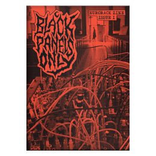

Issue I

Released 9th March 2020.
Features:
- ERD
- Serpens Modular
- Error Instruments
- Blood & Dust
- TL3SS
- Elevator Sound
- My Rack - Tommy Creep
- How to get started with Modular
- Reviews: David Fyans, Lateral AM, Phase 47
Read more about this issue